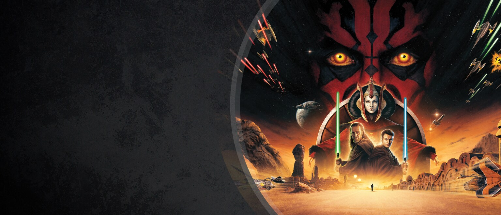
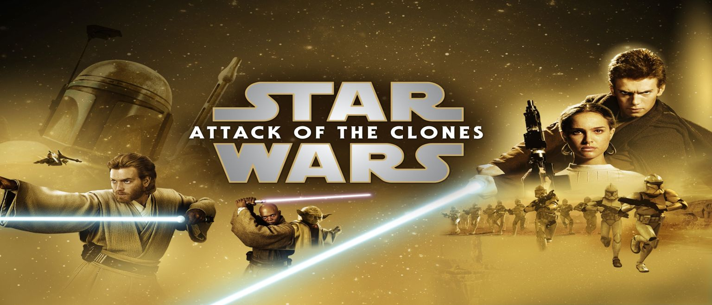

Star Wars
Star Wars
Epizoda I
Epizoda II
Epizoda III

STAR WARS: Epiozda I - Skrytá hrozba
Klikňete na zobrazení příběhu.

STAR WARS: Epiozda II - Klony útočí
Klikňete na zobrazení příběhu.
STAR WARS: Epiozda III - Pomsta Sithů
Klikňete na zobrazení příběhu.
Previous
Next